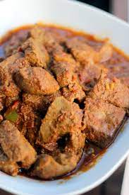

Liver for 2
Indgredients
- Liver half a Kilogram
- 2 Tomatoes
- 1 Onion
- Oil 3 tablespoons
- 1 tablespoon of salt
Procedure
- Slice up your onions and tomatoes
- Have your pot on fire and start with the oil
- Start with onions and stir them until they are golden brown
- Add tomatoes and continue until they become fleshy
- Add a teaspoon of salt
- Add your liver and some reasonable amount of water about quatre litre
- Cover your pot with a lid and leave them to boil for around 15 minutes
- If you are smelling an aroma you are ready to go
Liver can be served with rice, ugali and rotti.
Top
Home | Prev